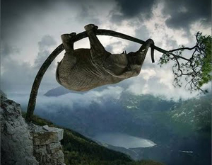
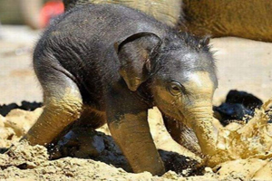

Nagy Lajos
Képtelen természetrajz
Az elefánt (részlet)

Az elefánt a legnagyobb szárazföldi állat, de csak a felnőtt elefánt,
mert egy igen kis elefánt például jóval kisebb, mint egy igen nagy
víziló. Az elefánt úgynevezett állatkertekben fordul elő, a föld
minden nagyobb városában, amiért is az elefánt hazája széles e világ,
amiben a művészhez hasonlít. Állatkert nélkül csakis Indiában és
Afrikában fordul elő, amiért is azok, akik elefántvadászatra indulnak
Pilisvörösvárra, kénytelenek néhány nyúllal beérni.
Meddig él egy elefánt?

Az elefántot robbanó golyóval vadásszák, amire nagyon dühös. Életkora
igen magas, egy tudós egyszer sokáig figyelt egy elefántot, amint az
kétszáz évet élt egyfolytában. Persze előbb is meghalhat, de csak
akkor, ha valami olyan különös baj történik vele, amit egy elefánt se
bír ki.
Az elefánt és a fürdés

Az elefánt igen sajátságosan iszik, beledugja ormányát a vízbe, éppen
úgy, mint a nagyorrú kávénénikék a kávéba, de aztán a kávénénikéktől
eltérőleg teleszívja az ormányát, és azt nem hagyja csak úgy
visszacsöpögni a kötényére, hanem igenis belespricceli a szájába,
amiben bizony a disznóhoz hasonlít, nem mintha a disznó is így tenne,
hanem mert ez már mégiscsak illetlenség.